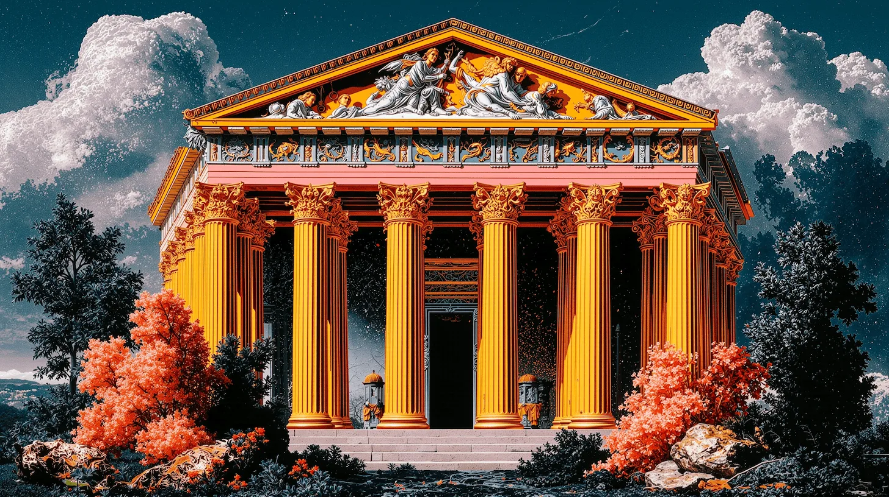
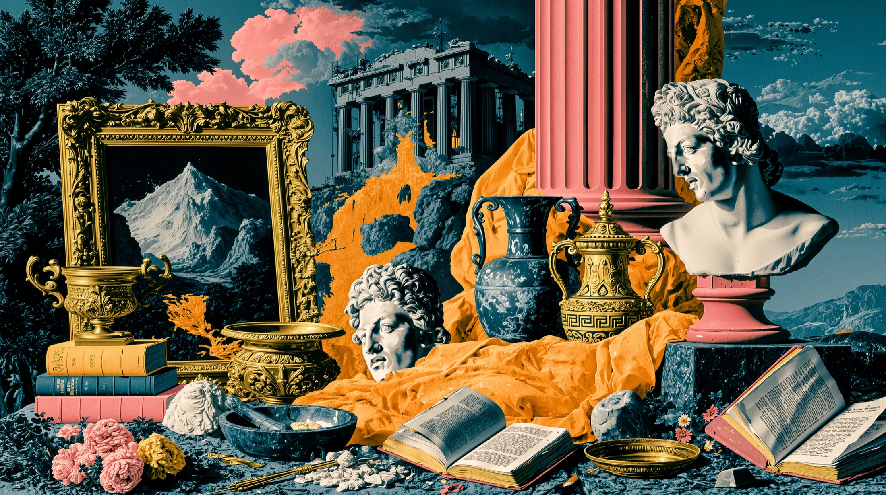
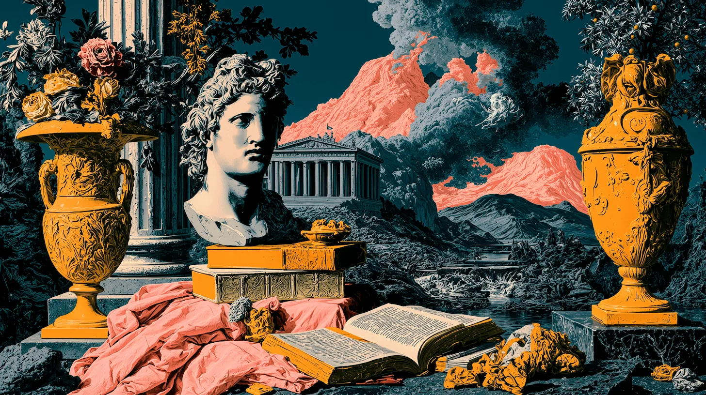

EAU DE PARNASSE
Snowmelt, white amber, crushed laurel
The air at altitude, where thought gets thin and clean. For mornings that feel like a decision.

A House Discovered, Not Founded
Fragrance, cast in marble & starlight. For those who suspect
they have lived this life before.

We did not design Elysian. We excavated it — from the rubble of a civilization that never quite existed, half Greek, half imagined, entirely ours. A bust missing its plinth. A painted mountain, framed in gold, standing in for the real one just outside the window. Books left open mid-sentence by someone who knew you'd finish the thought.
Elysian is what happens when antiquity stops being past tense.
Four scents. Four thresholds. Each one a place you've never been, remembered anyway.
Snowmelt, white amber, crushed laurel
The air at altitude, where thought gets thin and clean. For mornings that feel like a decision.
Cold stone, incense, black fig
A temple after the last visitor leaves. Quiet enough to hear the columns settle.
Gilded pear, saffron, aged parchment
Wealth as a season, not a number. Sweet, dry, slightly dangerous.
Mineral musk, wet stone, pink pepper
Cold water over warm skin. The moment before you remember your own name.
Scroll. The ruins keep moving so you don't have to leave.

Where the last reader of the old world set down her book and never picked it back up. The volcano in the distance is decorative. Probably.
Some structures exist only to frame the sky correctly.
Shout something true here and the mountains will repeat it, slightly improved.
We chose not to identify him. He seemed to prefer it that way.
Elysian releases in extremely limited casting runs — each bottle numbered, blown, and slightly imperfect, the way anything worth remembering is. Leave your name. We will know when it's time.
No. 001 through No. 300. Nothing more will be made this year.